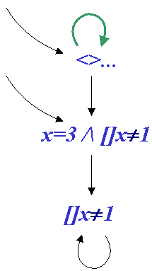
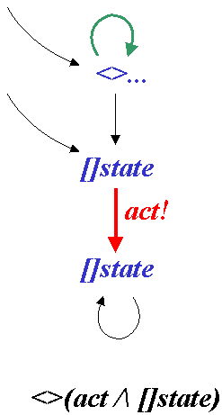

"Engineers should be able to specify and verify their systems directly and conveniently in logic." This comment offers a pragmatic motivation for using Lamport's Temporal Logic of Actions (TLA), and its associated model-checker (TLC). The comment also implies a distinction between TLC and other comparable model-checkers, where specifications must be translated into a special-purpose language. (A model of a specified system, in this context, is a sample execution trace. To 'check' a model is to ensure that it satisfies the given verification conditions).
The goal of the project was to extend TLC to verify arbitrary temporal formulas. Hitherto, it could verify only "always" formulas about states:
"always, the state will be such with no dangling pointers"Now it can verify more general formulas:
"if ever I put a datum into my reliable-transport-protocol, then it must eventually come out the other end."
The problem of verifying arbitrary temporal formulas about states is a standard one, addressed by other model-checkers as well. It is solved using the "tableau" technique of Clark and Emerson [1981]. We briefly outline this technique below. (Temporal formulas are ones involving the predicates [] always, or <> eventually. For instance, [](a => <>b) means that every occurence of a must eventually be followed by an occurence of b).
However, the application of this technique raises new problems for the Temporal Logic of Actions. In fact, they arise as a direct consequence of the very actions that give the logic its name. (Actions relate the next state of the system to the current state and describe the transitions of the system. An example action is: x'=x+1.)
The first problem concerns fairness criteria. A fair transition is one that must eventually be taken (assuming that it is possible). In conventional model-checkers, fairness is specified explicitly in the special-purpose specification language. For example, to say that the scheduler must eventually allow the process to proceed, we might write:
fair; x := x+1;In TLC, fairness is expressed as a logical predicate on actions, i.e., "Always, eventually, x'=x+1"
[] <> (x'=x+1)Note that this is merely a logic formula, and can appear anywhere in the specification or verification conditions (whereas the keyword fair can obviously appear only as part of the specification program).
The new technique we introduced to deal with such formulas, in specification or verification conditions, involves converting the problem into disjunctive normal forms. These forms always have the same structure:
(<>[]ea1 /\ []<>ae1 /\ misc1) \/ (<>[]ea2 /\ []<>ea2 /\ misc2) \/ ...Observe that, within each disjunct, the fairness formulas <>[] and []<> are all gathered together. This gives them a straightforward decision procedure: an infinite cycle in the system's behaviour satisfies <>[]p if p is true everywhere in the cycle; and it satisfies []<>q if q is true somewhere in the cycle. We provided an algorithm to convert arbitrary expressions into normal form, proved that the conversion preserved meaning and that the normal forms were unique, and implemented the decision procedure.
The fairness formulas above are a generalisation of the fairness specifications present in other model-checkers. But the Temporal Logic of Actions actually allows even greater generality -- it allows arbitrary temporal formulas involving actions and states. To handle such formulas in full generality requires that the standard tableau technique be modified to handle actions. Unfortunately, a way to implement this modification was not discovered until late in the summer, so there was insufficient time to fully develop the theory. (The disjunctive normal forms, although just a special case, are still important: they are essentially an optimisation that reduces the exponential cost of the fairness tableau).
The tableau technique is as follows: To check whether a sample execution trace satisfies a given temporal formula on states -- for instance, Not ([] (a => <>b)) -- we construct a particular (non-deterministic) finite state machine. This machine accepts only those traces which satisfy the formula. We run the sample execution-trace in parallel with the machine. If the trace is accepted by the machine, then it satisfies the temporal formula! The machine and example formula is illustrated below:

The suggested modification of the technique, so that it can check arbitrary formulas on actions as well as on states, is illustrated in the example machine below:

The techniques described above--for converting the problem of fairness criteria into disjunctive normal forms, and for the tableau technique for checking arbitrary temporal formulas--were implemented within TLC. As presented, the techniques may be prohibitively expensive in time and space. They have not yet been tested on real-world examples. It remains an open question as to whether there is any practical, engineering benefit to the verification of temporal formulas. Hopefully, the two new techniques introduced in this summer project will eventually lead to an answer.